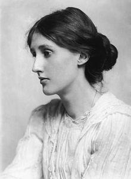
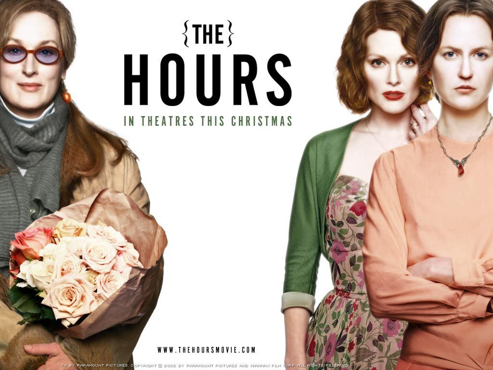

Virginia Woolf (25 Jan. 1882 – 28 Mar. 1941)
Virginia Woolf who was an English writer was known as the pioneer of modernism and feminism in the 20th century. She was a member of Bloomsbury Group. She experienced several nervous breakdowns and suffered from bipolar disorder. In the last, she committed suicide in 1941.
Works
- Mrs. Dalloway (1925)
- To the Lighthouse (1927)
- A Room of One's Own (1929)
- Orlando: A Biography (1928)

Mrs. Dalloway
The novel depicts the details in the life of the protagonist Clarissa Dalloway in post–First World War England. It is a typical stream of consciousness novel. All thoughts, retrospectives, and reality take place in June. All the scenes are closely related to the characters' thoughts. Woolf blurs the difference between direct dialogue and indirect dialogue, describing the plot with the author's direct narration and omniscient description. Because of structural and stylistic similarities, Mrs. Dalloway is commonly considered to be a response to James Joyce's Ulysses
The Hours (film)
In 2002, The Hours is directed by Stephen Daldry and starring Meryl Streep, Nicole Kidman, and Julianne Moore. The plot narrates that three women's lives from different generations are interconnected with the novel Mrs. Dalloway which is written by Virginia Woolf. With nine Academy Award nominationsIn, Nicole Kidman in the film as Virginia Woolf wins Best Actress.